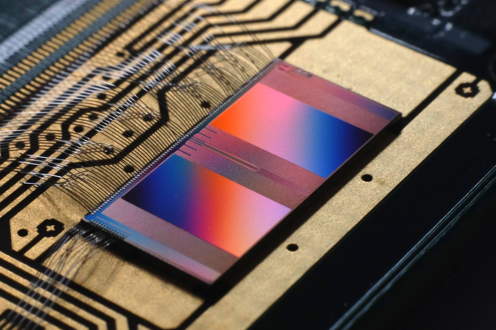
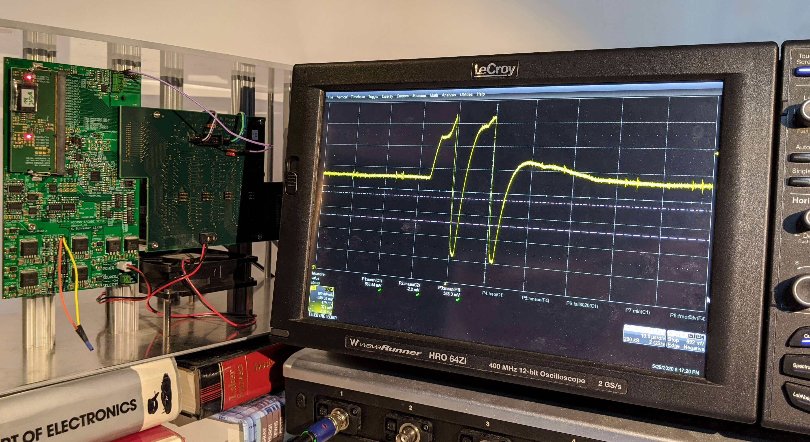
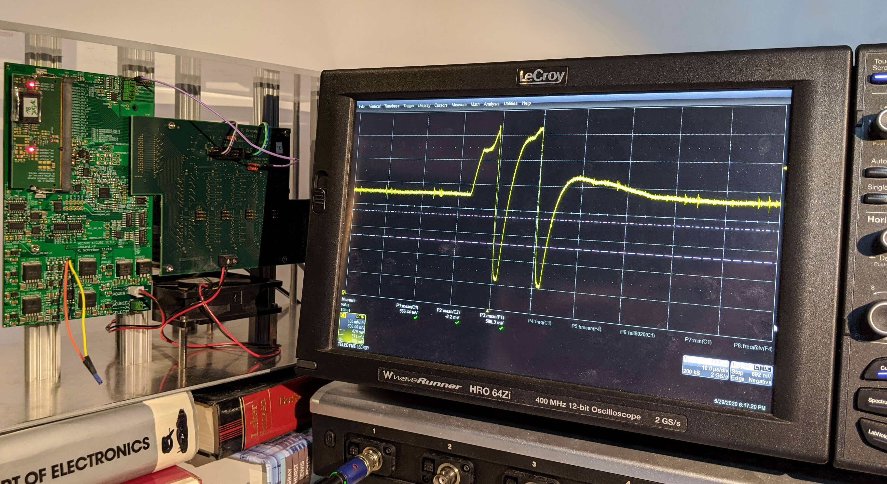

Unsere neuromorphe Hardware¶
Zwar ist der Name dieses Workshops “Neuromorphe Computer - Das Gehirn aus dem Labor”, allerdings ist unsere Hardware deutlich kleiner als das, was man sich typischerweise unter einem Computer vorstellt. Auch was die Anzahl der Neuronen und Synapsen angeht, sind wir größenordnungstechnisch weit von dem entfernt, was unser Gehirn besitzt. Also schauen wir uns diesen Namen mal genauer an:
“Neuromorph” bedeutet soviel wie “am Nervensystem orientiert”. Das heißt, dass die Hardware, die wir entwickeln, nicht wie ein klassischer Computer mit Nullen und Einsen arbeitet, sondern das Verhalten biologischer Nervenzellen nachahmt. Genauer gesagt gibt es künstliche Neuronen, die mit vielen anderen verbunden sein können, und Informationen mithilfe von Spikes austauschen.
Beim Begriff “Computer” denkt man vielleicht zuerst an einen großen Kasten, der unter dem Schreibtisch steht und an einem Bildschirm angeschlossen ist. Oder auch schon an etwas kleineres wie einen Laptop, ein Tablet oder gar ein Smartphone. Allerdings kann man unter diesem Begriff auch alles fassen, was etwas berechnet (englisch: compute = berechen). Dabei sind nicht nur mathematische Aufgaben gemeint, sondern die Verarbeitung von Informationen insgesamt. Unsere neuromorphen Computer sind kleine Chips, die gerade mal 4mm x 8mm groß sind.
Und dann haben wir noch “Das Gehirn aus dem Labor”. Wie bereits erwähnt besitzt das menschliche Gehirn um die 100 Milliarden Neuronen, welche durch ungefähr eine Billiarden (das ist eine Eins mit 15 Nullen) Synapsen miteinander verbunden sind. Auf einem unserer Chips befinden sich gerade mal 512 Neuronen, die Input von jeweils 256 anderen Neuronen bekommen können, also ca. 131.000 Synapsen. Das kommt noch nicht einmal dem Gehirn einer Fliege nahe, das im Durchschnitt 250.000 Nervenzellen besitzt. Trotzdem können wir mit diesen 512 Neuronen schon spannende Experimente machen.
Es gibt ein paar Hauptmerkmale, in denen sich unsere künstlichen Neuronen von biologischen unterscheiden. Im Körper funktioniert vieles mit Ionen, also geladenen Atomen und Molekülen, was Zusammenschlüsse aus diesen sind. In der Technik hingegen sind hauptsächlich Elektronen von Bedeutung. Diese sind viel kleiner und schneller als Ionen. Dadurch sind unsere künstlichen Nervenzellen 1000 mal schneller als ihre biologischen Gegenstücke. Außerdem ist das Aktionspotential stereotypisch, was bedeutet, dass es immer gleich aussieht. Darin selbst ist also keine weitere Information enthalten. Einzig die Tatsache, dass es auftritt, ist wichtig. Deswegen bilden wir nicht den gesamten Verlauf des Aktionspotentials ab, sondern sobald die Schwellenspannung erreicht ist, wird ein digitaler Spike erzeugt. Das Membranpotential wird dann direkt zur Umkehrspannung gezogen, welche es bei der Hyperpolarisation annimmt, dort für die Refraktärzeit festgehalten und darf dann wieder zurück zur Ruhespannung. Dieses Verhalten werdet ihr in den Experimenten beobachten können.
{kind=link}
 

{kind=link}